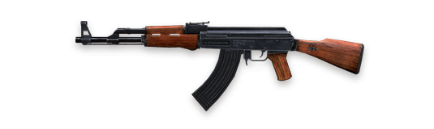

WEAPON
AK47
High damage and requires skill to control.
SCAR

A stable, well balanced rifle that is great for beginners to use.
GROZA

High damage and long-range rifle with great stability. Possibly the strongest rifle Gamer'z Wap has ever seen.
AUG

Army general rifle AUG, equipped with replaceable double mirror, strong individual combat effectiveness.